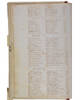
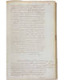
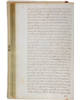
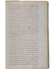
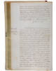

The Official Story
Chapter 7
Foster's creditors line up to collect
The court records suggest that Foster's creditors attempted to retrieve what he owed them.In the Lincoln County Court records for 1788, there are records of a Boston merchant attempting to collect a sizeable debt from Foster. Henry Sewall kept tabs on the case in his diary. He records his correspondence with the Boston merchant's attorney, his attendance at the trial in Pownalborough, and his attendance at the appeal, which Foster lost. (Notice that Henry Sewall was in Pownalborough for other reasons, too. His defamation case with Foster was still brewing.)
Looking through the town's property deeds, we find records showing Isaac Foster sold some unimproved property in 1790 for 60 pounds. He'd acquired the same property a couple of years earlier for 200 pounds, but the town treasurer held a mortgage on the property. It seems Foster was being forced to hand over the land because he was unable to raise the funds required to pay off a 30 pound debt.
| Martha's diary entries suggest that the local townsfolk were lining up to make their claims against Isaac Foster. |

| previous |
Foster haggles with the town | |
| next |
The evidence suggests that Foster began looking for another job. |
| Land deeds of Rev. Foster Lincoln County Courthouse August 2, 1790 |
View Image View Frames version |
| Grantor Index D-G | Aug 2, 1790 Page 66 | Aug 2, 1790 Page 66 (back) | Aug 2, 1790 Page 67 | Aug 2, 1790 Page 67 (back) | |
 |
 |
 |
 |
 |
|
|
August 2, 1790 Page 66 |
|
|||||
|
|||||||
|
|
|
||||||